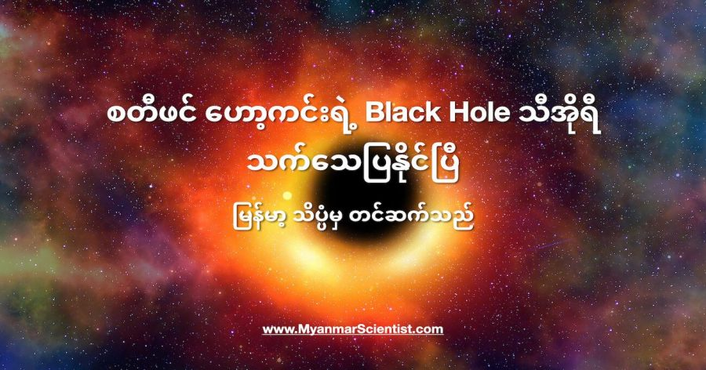

ကမ္ဘာကျော် ရူပဗေဒ သိပ္ပံပညာရှင်ကြီး စတီဗင် ဟော့ကင်း (Stephen Hawking) လွန်ခဲ့တဲ့ နှစ် ၅၀ က ဟောကိန်းထုတ်ခဲ့တဲ့ သီအိုရီ တစ်ရပ် မှန်ကန်ကြောင်းကို အာကာသ သုတေသီတွေက သက်သေပြလိုက် နိုင်ပြီ ဖြစ်ပါတယ်။ “ဟော့ကင်း ဧရိယာ သီအိုရီ” (Hawking’s Area Theorem) လို့ အမည်ပေးထားတဲ့ ဒီ သီအိုရီကို စတီဗင် ဟော့ကင်းက ၁၉၇၁ ခုနှစ်မှာ တင်ပြခဲ့တာ ဖြစ်ပါတယ်။ ဒီ သီအိုရီ အရ တွင်းနက် (Black Hole) တွေရဲ့ ပြန်လမ်းမဲ့ နယ်ခြား (Event Horizon) ဟာ ဘယ်တော့မှ သေးငယ် သွားမှာ မဟုတ်ဘူး လို့ သူက ဟောကိန်းထုတ်ခဲ့တာ ဖြစ်ပါတယ်။
Event Horizon လို့ ခေါ်ကြတဲ့ ပြန်လမ်းမဲ့ နယ်ခြား ဆိုတာက တွင်းနက် တစ်ခုရဲ့ ဆွဲငင်အား အပြင်းထန်ဆုံး သက်ရောက်ရာ ရပ်ဝန်းကို ခေါ်ဆိုတဲ့ အမည် ဖြစ်ပါတယ်။ ဒီ နယ်ခြားမျဉ်းကို ကျော်လိုက်တာနဲ့ အလင်းရောင်က အစ ဘာတစ်ခုမှ ပြန်ထွက်လာ နိုင်စွမ်း မရှိတော့ပါဘူး။ တနည်းအားဖြင့် ဒီ မျဉ်းရဲ့ ဟိုဖက်ခြမ်းမှာ ဘာတွေ ဖြစ်နေလဲ ဆိုတာကို အပြင်ကလူ တွေ မသိနိုင်ပါဘူး။ ကျွန်တော်တို့ မိုးကုတ်စက်ဝိုင်း အကျော်မှာ ရှိတဲ့ အရာဝတ္ထုတွေကို မမြင်ရ သလိုမျိုးပဲ ဒီမျဉ်းရဲ့ အကျော်က အဖြစ်အပျက် (event) တွေကို မသိနိုင် မမြင်နိုင်တာမို့ သူ့ကို Event Hosizon လို့ အမည်ပေးထားတာ ဖြစ်ပါတယ်။
ဆက်စပ် ဆောင်းပါး – Black Hole ဆိုတာ ဘာလဲ
ဒီ ပြန်လမ်းမဲ့ နယ်ခြား အလွန်ကနေ ရုန်းထွက်မယ်ဆို ထွက်လို့ရတဲ့ တနည်းတော့ ရှိပါသေးတယ်။ အဲ့တာကတော့ အလင်းရဲ့ အလျှင်ထက် မြန်တဲ့ နှုန်းနဲ့ ခရီးသွားနိုင်မယ် ဆိုရင်တော့ ရုန်းထွက် နိုင်ပါလိမ့်မယ်တဲ့။ ပြဿနာက စကြာဝဠာထဲမှာ ဘယ်အရာမှ အလင်းရဲ့ အလျင်ထက် မြန်အောင် မသွားနိုင်တာပဲ ဖြစ်ပါတယ်။ တနည်းအားဖြင့်တော့ black hole တစ်ခုထဲ ကျသွားရင် ဘယ်လိုမှ ရုန်းထွက်ဖို့ မဖြစ်နိုင်ဘူး ဆိုတာပါပဲ။
ဒီ သီအိုရီကို တင်ပြပြီး နောက် နှစ် ၅၀ အကြာ ၂၀၂၁ မှာတော့ ကော်နဲလ် တက္ကသိုလ် Cornell University) နဲ့ မက်ဆာချူးဆက် နည်းပညာ တက္ကသိုလ် (MIT) တို့က ပညာရှင်တွေက သူ့ရဲ့ ဟောကိန်း မှန်ကန်ကြောင်းကို သုတေသန တွေ့ရှိချက်တွေနဲ့ သက်သေပြနိုင် ခဲ့ပါတယ်။ ဒီပညာရှင်တွေဟာ အာကာသ ထဲက ဆွဲငင်အားလှိုင်း (Gravitaional Waves) တွေကို လေ့လာရင်း တွေ့ရှိချက်တွေကနေ သက်သေပြနိုင် ခဲ့တာ ဖြစ်ပါတယ်။ သူတို့ရဲ့ တွေ့ရှိချက်တွေကို ဂျူလိုင် ၁ ရက်နေ့ထုတ် Physical Review Letters မှာ တင်ပြခဲ့တာ ဖြစ်ပါတယ်။
ဆက်စပ် ဆောင်းပါး – ဆွဲငင်အား လှိုင်းဆိုတာ ဘာလဲ
ဒီ သုတေသနမှာ ပါဝင်တဲ့ ပညာရှင်တွေဟာ ၂၀၁၅ ခုနှစ်က ပထမဆုံး ဖမ်းယူရရှိခဲ့တဲ့ ဆွဲငင်အားလှိုင်း ကို အသေးစိတ် လေ့လာပြီး ဒီစာတမ်းကို တင်ပြခဲ့တာပါ။ ဒီ ဆွဲငင်အားလှိုင်းကို GW150914 လို့ အမည် ပေးထားခဲ့ပါတယ်။ ဒီလှိုင်းကို ၂၀၁၅ ခုနှစ်က Laser Interferometer Gravitational-wave Observatory (LIGO) လေ့လာရေး သုတေသန စခန်းကနေ ဖမ်းယူရရှိ ခဲ့တာပါ။ ဒီ ဖမ်းယူရရှိတဲ့ လှိုင်းတွေကို ကွန်ပြူတာနဲ့ ပြန်ပုံဖေါ် ကြည့်လိုက်တဲ့ အခါ ဘာသွားတွေ့လဲ ဆိုတော့ ဒီလှိုင်းတွေဟာ တွင်းနက်ကြီး နှစ်ခု ပူးပေါင်းသွားရာက ထွက်ပေါ်လောတဲ့ လှိုင်းတွေဆိုတာ သိလာရပါတယ်။
ဒီ တွင်းနက်ကြီး နှစ်ခုပေါင်းပြီး ပိုမို ကြီးမားတဲ့ တွင်းနက် Black Hole အသစ်တစ်ခု ဖြစ်ပေါ်လာပါတယ်။ ဒီလို ပူးပေါင်းသွားတဲ့ ဖြစ်စဉ်မှာ အလွန် အင်အားကြီးမားတဲ့ စွမ်းအင်တွေ ထွက်လို့ လာပါတယ်။ ဒီ စွမ်းအင်တွေဟာ အချိန်နဲ့ အာကာသ အတွင်းမှာ ဆွဲငင်အားလှိုင်းတွေ အနေနဲ့ ပြန့်ထွက်လို့ သွားပါတယ်။
“ဟော့ကင်းရဲ့ ဧရိယာ သီအိုရီကို လက်တွေ့ စမ်းသပ်ဖို့ ဆိုတာက ဘယ်လိုမှ မဖြစ်နိုင်တဲ့ ကိစ္စ တစ်ခုပါ။ ပထမဆုံး အာကာသထဲက Black hole တွေရဲ့ အကျယ်အဝန်းကို တိုင်းရမယ်။ ပြီးတော့ ဒီ တွင်းနက်တွေ ထဲက တွင်းနက် နှစ်ခု တစ်ခုနဲ့ တစ်ခု ပေါင်းသွားမယ့် အချိန်ကို စောင့်ရမယ်။ ပေါင်းသွားပြီးရင် တခါ အရွယ် အစားကို ပြန်တိုင်းရမယ်” လို့ ဒီစာတမ်းမှာ ပါဝင် ရေးသားသူ တစ်ယောက်ဖြစ်တဲ့ ပါမောက္ခ ဆော်လ် တူကိုလ်စကီး (Saul Teukolsky) က ပြောပါတယ်။
“ဒါပေမယ့် ကျွန်တော်တို့ အတွက် အလွန်ကံကောင်း သွားစေတာကတော့ ကျွန်တော်တို့ မျက်စေ့ရှေ့မှာ တွင်းနက် နှစ်ခု ပေါင်းပြီး ဆွဲအားလှိုင်းတွေ ထွက်လာတာကို ဖမ်းယူလိုက် နိုင်ခြင်းပဲ ဖြစ်ပါတယ်။”
အကယ်လို့ ဟော့ကင်းရဲ့ ဧရီယာ သီအိုရီသာ မှန်ခဲ့မယ်ဆို ဒီလို တွင်းနက် နှစ်ခု ပေါင်းပြီး အသစ်ဖြစ်လာတဲ့ တွင်းနက် အသစ်ရဲ့ အကျယ်အဝန်းဟာ မူလ တွင်းနက်တွေရဲ့ အကျယ်အဝန်းထက် ကြီးရပါလိမ့်မယ်။ ယခု သိပ္ပံ ပညာရှင်တွေက ဒါကို မှန်မမှန် သိနိုင်ဖို့ ဒီတွင်းနက် နှစ်ခု မပေါင်းမီက ဖမ်းယူရရှိတဲ့ ဆွဲအားလှိုင်းတွေနဲ့ ပေါင်းပြီး ဖြစ်လာတဲ့ ဆွဲအားလှိုင်းတွေကို နှိုင်းယှဉ် လေ့လာ ကြည့်ခဲ့ပါတယ်။ ဒီအခါမှာ တွင်းနက်အသစ်ဟာ မူလ တွင်းနက် အဟောင်းတွေထက် အရွယ်အစား ပိုကြီးမားတယ် ဆိုတာ တွေ့ရှိခဲ့ ကြပါတယ်။
ဟော့ကင်းရဲ့ ဧရိယာ သီအိုရီ ကို ယခင်ကတော့ သင်္ချာနည်းနဲ့သာ တွက်ချက်ပြီး သက်သေပြနိုင် ခဲ့တာပါ။ ဒီသီအိုရီ မှန်ကန်ကြောင်း အထောက်အထား ပြစရာ လက်တွေ့ သုတေသန ရလဒ် မရှိခဲ့ပါဘူး။ အခု သုတေသန တွေ့ရှိချက်ဟာ ဒီ သီအိုရီမှန်ကန်ကြောင်း ပထမဆုံး တွေ့ရှိရတဲ့ လက်တွေ့ အထောက်အထား တစ်ခုပဲ ဖြစ်ပါတယ်။ ယခု စာတမ်းကို တင်ပြခဲ့တဲ့ သုတေသန အဖွဲ့ဟာ နောက်ထပ် ဆွဲငင်အား လှိုင်းတွေ ကို ထပ်မံ လေ့လာပြီး အထောက်အထား ထပ်ရှာအုံးမယ်လို့ ဆိုပါတယ်။
အခု ဆွဲငင်အားလှိုင်းကနေ တွင်းနက်ရဲ့ အရွယ်အစား၊ ဒြပ်ထုနဲ့ လည်ပတ်နှုန်းတွေကို ရှိဖွေတဲ့ နည်းလမ်းကို ၂၀၁၉ ခုနှစ်မှာ ကော်နဲလ် တက္ကသိုလ်က သုတေသီ မက်သယူး ဂစ်ဆလာ (Matthew Giesler) က အဆိုပြုခဲ့တာ ဖြစ်ပါတယ်။ ဒီနည်းက တွင်းနက် နှစ်ခု တိုက်မိလို့ လှိုင်းတွေ ရုတ်ရက်ထအောင် ဝရုန်းသုန်းကား ဖြစ်နေတဲ့ အထဲက လိုချင်တဲ့ လှိုင်းကို ရအောင် ရွေးထုတ် ပေးနိုင်တယ့် နည်းဖြစ်ပါတယ်။ ဒီနည်းကို အသုံးပြုပြီ အခု တွင်းနက် နှစ်ခု တိုက်မိလို့ ရလာတဲ့ တွင်းနက် အသစ်နဲ့ သက်ဆိုင်တဲ့ အချက်အလက်တွေကို ရှာဖွေပြီး တွက်ယူကြတာပဲ ဖြစ်ပါတယ်။
မတိုက်မိခင်က အချက်အလက်တွေကိုလဲ ကွန်ပြူတာထဲ ထည့်သွင်းပြီး မတိုက်မိခင် တိုက်မိကာနီး ဆဲဆဲလေးမှာ ရှိနေတဲ့ တွင်းနက် နှစ်ခုရဲ့ ဒြပ်ထု နဲ့ လည်ပတ်နှုန်းကို တွက်ယူပါတယ်။ သူတို့ရဲ့ တွက်ချက်မှု အရ မူလက မတိုက်မိခင်က တွင်းနက်နှစ်ခုပေါင်းရဲ့ ဧရိယာဟာ ၂၃၅,၀၀၀ စတုရန်း ကီလိုမီတာ ကျယ်ဝန်းပါတယ်။ ဒီ အကျယ်အဝန်းဟာ မြန်မာပြည် အကျယ်အဝန်းရဲ့ သုံးပုံ တစ်ပုံလောက်ပဲ ရှိတာပါ။
ပြီးတဲ့နောက် အပေါ်က တိုက်မိပြီး ဖြစ်လာတဲ့ တွင်းနက်ရဲ့ အချက်အလက်တွေကို မက်သယူး ရှာဖွေတွေ့ရှိခဲ့တဲ့ (အပေါ်မှာ ပြောခဲ့တဲ့) နည်းလမ်းသုံးပြီး ရှာဖွေပါတယ်။ ဒီ တွက်ချက်မှုအရ တိုက်မိပြီး ဖြစ်လာတဲ့ တွင်းနက် အသစ်ရဲ့ ဧရိယာ ဟာ ၃၆၇,၀၀၀ စတုရန်း ကီလိုမီတာ ကျယ်ဝန်းပါတယ်။ (မြန်မာပြည်ရဲ့ တစ်ဝက် ကျော်ကျော် ရှိပါတယ်)
“ဟော့ကင်းရဲ့ ဧရိယာ သီအိုရီဟာ အိုင်းစတိုင်းရဲ့ နှိုင်းယှဉ်ခြင်း သီအိုရီ (Special Theory of Relativity) ရဲ့ ဆင့်ပွား သီအိုရီ တစ်ခု ဖြစ်ပါတယ်။ ဒီ သီအိုရီကို သက်သေ ပြနိုင်တာဟာ အိုင်းစတိုင်းရဲ့ သီအိုရီ ကို သက်သေပြတာလဲ ဖြစ်ပါတယ်” လို့ ဒီသုတေသနမှာ ပါဝင်တဲ့ ပညာရှင် တစ်ဦးက ဖြည့်စွက်ပြောကြား ခဲ့ပါတယ်။
References:
Stephen Hawking Was Right: Black Holes Simply Can’t Shrink | Popular Mechanics
Hawking’s black hole theorem observationally confirmed | Cornell Chronicle
စတီဗင် ဟော့ကင်းရဲ့ Black Hole သီအိုရီ နှစ် ၅၀ အကြာမှာ သက်သေပြနိုင်ပြီ

August 20, 2021
Other Posts
- ဂလက်ဆီ နှစ်လုံး တိုက်မိတဲ့ ဓါတ်ပုံ
- မျိုးရိုးဗီဇ အခြေခံ ဒြပ်ပေါင်း ဂြိုဟ်သိမ် တစ်ခုပေါ်တွင် ရှာတွေ့
- ပင်လယ်ထဲက ပလတ်စတစ် အမှိုက်ရှင်းမယ့် နည်းပညာသစ်
- ဂလက်ဆီ (Galaxy) ဆိုတာဘာလဲ
- မျိုးပွားနိုင်တဲ့ သက်ရှိ ရိုဘော့ စမ်းသပ်အောင်မြင်
- လျှပ်စစ်စွမ်းအင်သုံး ခရီးသည်တင် လေယာဉ်
- သောကြာဂြိုဟ် နဲ့ ကြာသပတေးဂြိုဟ် ဒီည ပူးမယ်
- အပြည်ပြည် ဆိုင်ရာ အာကာသ စခန်းက ရုရှားထွက်မယ်ဆို SpaceX ကကူမယ်
- တဖြည်းဖြည်း ပျောက်ကွယ်နေတဲ့ အမျိုးသားတို့ရဲ့ Y ခရိုမိုဆုမ်း
- ဒြပ်ထု (mass) နဲ့ အလေးချိန် (weight) ဘာကွာလဲ